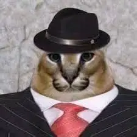

O que é?
O Gato Agiota é um jogo de educação financeira inspirado no Streets of Rage, onde
você trabalha arduamente em diversos empregos em busca do dinheiro pra pagar uma dívida com um agiota, que é um gato.
Este jogo foi criado com a intenção de conscientizar os jovens, de maneira mais humorística, sobre os males de fazer empréstimos com agiotas. Permitindo que eles se divirtam enquanto são informados.
CONHEÇA O JOÃO!
A história se passa na perspectiva de um cara chamado João, uma pessoa qualquer que queria muito comprar um PC Gamer. Porém, ele não tinha dinheiro, então ele teve a BRILHANTE idéia de fazer um empréstimo com um agiota para que ele pudesse comprar o computador. Assim ele conheçe...
O GATO AGIOTA!

Mas o que o nosso protagonista não sabia era que este gato é MALDOSO. O agiota deu para ele um juros ALTÍSSIMO para pagar junto com o dinheiro do empréstimo, tudo em um curto tempo de 7 dias. Caso o contrário....
MORTE!!!

Agora o João deve embarcar em diversos empregos para conseguir dinheiro e, enfim, pagar a dívida que ele está devendo. Você tem o que é preciso para se livrar deste fardo? Ou sucumbirá para a falência?